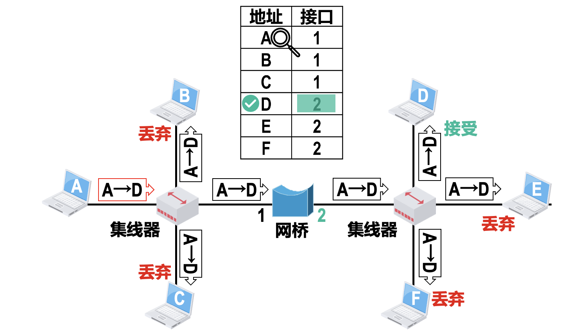

数据链路层
概述
几个基本概念：
- 链路（link）：从一个节点到相邻节点的一段物理线路（有线或无线），而中间没有任何其他的交换节点。
- 数据链路（data link）：当需要在一条线路上传送数据时，除了必须有一条物理线路外，还必须有必要的通信协议来控制这些数据的传输。若把实现这些协议的硬件和软件结合到链路上（一般使用网络适配器实现），就构成了数据链路。不同的数据链路可能采用不同的数据链路层协议。
不管在哪一段链路上的通信，都可以抽象为节点和节点的通信。
数据链路层不必考虑物理层如何实现比特传输的细节，从而可以更简单地设想是沿着两个数据链路层之间的水平方向把帧直接发送到对方。
通信时的基本流程为：发送端的数据链路层把网络层交下来的IP数据报添加首部和尾部构成帧（frame），发送给到链路上。若接收端的数据链路层收到的帧无差错，则从收到的帧中提取出IP数据报交给上面的网络层。
数据链路层的基本问题
两台主机之间的数据传输，总是在一段段的链路上传送的（点对点信道或广播信道），这就需要对链路上的通信过程作出一些规范。
封装成帧
将比特流划分成“帧”是为了检测和纠正物理层在比特传输中可能出现的错误。
在数据（网络层传送来的IP数据报）的前面和后面分别添加上首部和尾部，便构成了一个完整的帧。可见，一个帧的帧长 = 数据部分的长度 + 帧首部和帧尾部的长度。
为提高传输效率，应使数据部分所占帧的比例尽可能大，但考虑到对缓存空间的需求、差错控制等因素，每一种链路层协议都规定了所能传送的帧的数据部分的长度上限，即最大传送单元 MTU（Maximum Transfer Unit）。

首部和尾部的作用之一是进行帧定界：接收端在收到物理层上交的比特流后，能根据首部和尾部的标记，从比特流中识别出帧的开始和结束（即 帧同步）。
| 控制字符 | ASCII码 | 含义 |
|---|---|---|
| SOH | 00000001（01h） |
Start Of Header，首部开始符 |
| EOT | 00000100（04h） |
End Of Transmission，传输结束符 |
| ESC | 00011011（1B） |
转义 |
例如当数据是由 可打印的ASCII码（95个）组成的文本文件 时，ASCII码中定义了2个控制字符：SOH放在一帧的最前面，表示帧的开始；EOT放在帧的最后，表示帧的结束。

当数据在传输中出现差错时，帧定界符的作用更加明显。假定发送端在尚未发送完一个帧时突然出故障，恢复正常后重新从头开始发送刚才的帧。由于使用了帧定界符，接收端就知道前面收到的数据是个不完整的帧（只有SOH而没有EOT），因此会把它丢弃。而后面收到的数据有明确的帧定界符， 因此这是一个完整的帧，收下。
注意：各种数据链路层协议都对帧首部和帧尾部的格式有明确的规定。也并非所有数据链路层协议的帧都含有帧定界标志。
透明传输
所传输的数据中一定不能出现帧定界控制字符的编码，否则就会导致帧定界错误：数据链路层错误地“找到帧的边界”，把部分帧收下（误认为是个完整的帧），而把剩下的那部分数据丢弃（因为这部分找不到帧起始标志）。

当所传输的数据内容不会发生帧定界错误时，就称为透明传输。
“透明”表示：某一个实际存在的事物看起来却好像不存在一样。“在数据链路层透明传送数据”表示：无论什么样的比特组合的数据，都能够没有差错地通过数据链路层。因此对所传送的数据来说，数据链路层并没有对它们的传输带来什么影响，数据链路层对这些数据来说是透明的。
为了实现透明传输，就必须使数据中可能出现的帧定界符在接收端不被解释为控制字符。
字节填充法
例如：对帧的数据部分进行扫描，若数据中出现 SOH 和 EOT，则发送端的数据链路层就在该比特串前插入一个转义字符ESC。如果ESC也出现在数据当中，解决方法仍是在该比特串前面插入一个ESC；接收端的数据链路层在把数据送往网络层之前会删掉该转义字符（若收到连续的两个ESC时，只删除前面的一个）。

比特填充法
例如：HDLC 协议中采用 01111110 作为帧定界符。为实现透明传输，对帧的数据部分进行扫描，若数据中出现5个连续的比特1，就在其后插入一个0。经过填充后的数据中就不会出现帧定界符。

接收端的数据链路层每发现5个连续的比特1，
- 若下一比特为
0，就将该0删除。 - 若下一比特为
1，则连同其后的0，构成定界符，表示帧结束。
例题

差错检测
传输过程中可能会产生比特差错（即误码）：1变成0或0变成1。
提高信噪比，可以降低误码率，但实际通信链路的误码率不可能为0，因此采取措施来判断是否出现比特差错是必要的，一般过程为：
- 发送端的数据链路层根据帧的数据内容生成一个帧检验序列FCS（Frame Check Sequence），填入帧尾部。
- 接收端的数据链路层从帧尾部取出FCS，采用与发送方相同的检错技术，就可以判断是否出现误码。
奇偶校验和CRC均只能检测错误，而不能定位错误、纠正错误。要想实现纠错，可以使用冗余信息更多的纠错码（例如海明码）进行前向纠错。但纠错码的开销较大，在计算机网络中较少使用。
可靠传输与不可靠传输

可见在数据链路层若仅仅使用CRC检验，能够实现无比特差错的传输，但仍不是可靠传输。
当接收端检查出错误后，该如何处理呢？这取决于数据链路层提供的服务类型：
- 若数据链路层提供的是不可靠传输服务，则发生传输错误时，接收方的数据链路层直接丢弃该帧，无其它措施。
- 若数据链路层提供的是可靠传输服务，这就要求数据链路层采用某种措施以保证A发送的信息一定能被B接收到。为检测出帧丢失、帧重复、帧失序，就还需要添加帧编号、确认和重传机制、超时重传等机制。
一般来说，有线传输链路的通信质量较好，误码率较低，不要求数据链路层向上提供可靠传输的服务。可靠传输的任务由上层协议来完成；无线传输链路易受干扰，通信质量较差，误码率较高，则要求数据链路层向上提供可靠传输的服务（例如HDLC协议）。实践证明，这样做可以提高通信效率。
点对点信道的数据链路层——点对点协议PPP
对于点对点链路，PPP（Point-to-Point Protocol，点对点协议）是目前使用得最广泛的数据链路层协议。
用户计算机和 ISP 进行通信的链路所使用的数据链路层协议就是PPP协议。
PPP协议有3个组成部分：
- 一个将IP数据报封装到串行链路的方法。既支持异步链路（无奇偶检验的8比特数据），也支持面向比特的同步链路。
- 一个用来建立、配置和测试数据链路连接的链路控制协议 LCP（Link Control Protocol）。通信的双方可协商一些选项。
- 一套网络控制协议 NCP（Network Control Protocol），其中的每一个协议支持不同的网络层协议。
帧格式

-
标志（Flag）字段：PPP帧的定界符，取值为
0x7E（0111 1110）。连续两帧之间只需要用一个标志字段。如果出现连续两个标志字段，就表示这是一个空帧，应当丢弃。
-
地址（Address）字段：取值为
0xFF，预留（目前没有什么作用）。 -
控制（Control）字段：取值为
0x03，预留（目前没有什么作用）。 -
协议（Protocol）字段：其值用来指明帧的数据载荷应向上交付给哪个协议处理。

-
帧检验序列（FCS）字段：其值是使用循环冗余校验CRC计算出的检错码。
PPP帧的透明传输
异步传输
对于异步链路（面向字节，逐个字符地传送）—— 使用字节填充。发送方的处理：
- 将数据载荷中出现的每个**
0x7E减去0x20（等效为异或0x20），然后在其前面插入转义字符0x7D**。 - 将数据载荷中原来就含有的**
0x7D**减去0x20，然后在其前面插入转义字符0x7D。 - 将数据载荷中出现的每个ASCII码控制字符（即数值小于0x20的字符），加上
0x20（相当于异或0x20，将其转换成非控制字符），然后在其前面插入转义字符0x7D。

接收方进行与发送方相反的变换，就可以正确地恢复出原始数据载荷。
同步传输
对于同步链路（面向比特，一连串的比特连续传送，例如SONET/SDH链路）—— 使用零比特填充。
发送方：对帧的数据部分进行扫描，每出现5个连续的比特1，则在其后填充一个0。
接收方：对帧的数据部分进行扫描，每出现5个连续的比特1，就把其后的一个0删除。
差错检测
CRC采用的生成多项式为： 。
接收方每收到一个PPP帧，就进行CRC检验。若CRC检验正确，就收下这个帧；否则就直接丢弃这个帧，其他什么也不做。
使用PPP的数据链路层，向上提供的是不可靠数据传输服务。
PPP协议的工作
-
当用户拨号接入 ISP 后，就建立了一条从用户个人电脑到 ISP 的物理连接。
-
这时，用户个人电脑向 ISP 发送一系列 LCP 分组（封装成多个 PPP 帧），以便建立 LCP 连接。这些分组及其响应选择了将要使用的一些 PPP 参数。
-
接着进行网络层配置，网络控制协议 NCP 给新接入的用户个人电脑分配一个临时的 IP 地址。这样，用户个人电脑就成为互联网上的一个有 IP 地址的主机了。
-
当用户通信完毕时，NCP 释放网络层连接，收回原来分配出去的 IP 地址。
接着，LCP 释放数据链路层连接。
最后释放的是物理层的连接。
以太网
广播信道
以太网使用的是广播信道，可以进行一对多的通信方式，信道上连接的主机很多，需要进行信道的共享。
网络适配器
要将计算机连接到以太网，需要使用相应的网络适配器（Adapter）（即 网卡NIC）。
在计算机内部，网卡与CPU之间的通信，一般是通过计算机主板上的I/O总线以并行传输方式进行；网卡与外部以太网（局域网）之间的通信，一般是通过传输媒体以串行方式进行的。
可见，网卡除要实现物理层和数据链路层功能，还要进行并行传输和串行传输的转换。由于网络的传输速率和计算机内部总线上的传输速率并不相同，因此在网卡的核心芯片中都会包含用于缓存数据的存储器。
适配器在接收和发送各种帧时，不使用计算机的 CPU。当适配器收到有差错的帧时，就把这个帧直接丢弃而不必通知计算机。当适配器收到正确的帧时，它就使用中断来通知该计算机，并交付网络层。当计算机要发送IP数据报时，就由协议栈把IP数据报交给适配器，组装成帧后发送到局域网。
MAC地址
当多个主机连接在同一个广播信道上，要想区分各主机，每个主机都必须有一个唯一的标识，称为 MAC地址（Medium Access Control）。
MAC地址一般被固化在网卡的EEPROM中，因此MAC地址也被称为硬件地址、物理地址。
注意：MAC地址是对网络上各接口的唯一标识，而不是对网络上各设备的唯一标识。一般情况下，普通用户计算机中往往会包含两块网卡：用于接入有线局域网的以太网卡、用于接入无线局域网的Wi-Fi网卡。每块网卡都有一个全世界唯一的MAC地址。交换机和路由器往往具有多个适配器，所以会拥有更多的MAC地址。若连接在局域网上的一台计算机更换了一个新的适配器，那么该计算机的MAC地址也就改变了，虽然该计算机的地理位置、所接入的局域网都没有发生改变。
IEEE802局域网MAC地址的格式
用 ** bit（6个字节）**来构成一个 MAC 地址，转化为十六进制，可以表示为 XX-XX-XX-XX-XX-XX（长度为12）。
-
前3个字节为组织（公司）唯一标识符 OUI，由IEEE的注册管理机构分配（一个组织可能购买多个OUI）。
-
首字节的第 位为 I/G位：
0表示该MAC地址为单个站地址(单播)，1表示该MAC地址为组地址(多播)。 -
首字节的第 位为 G/L位：
0表示该MAC地址为全球地址，保证全球唯一（厂商所购买的 OUI 都属于全球管理）；1表示该MAC地址为本地地址，用户可任意分配网络上的地址。以太网几乎不理会这个 G/L 位。
特别的，48 位全部为
1的MAC地址（FF-FF-FF-FF-FF-FF）被定义为广播地址。 -
-
后3个字节为网络接口标识符，由厂商自行分配，保证生产出的适配器没有重复地址即可。
MAC地址的发送顺序（IEEE802.3标准）：第 字节 → 第 字节。对于每个字节内部，第 位 → 第 位。
DIX Ethernet V2的MAC帧格式
可见，以太网V2的MAC帧的长度范围为： 。
-
“类型”字段：用来指明数据载荷中的内容是由上一层的哪个协议封装的，以便将收到的MAC帧的数据载荷上交给上一层的这个协议。
-
“FCS”字段：使用CRC生成的帧检验序列，接收方的网卡通过FCS的内容就可检测出帧在传输过程中是否产生了误码。FCS的检测范围不包括帧开始定界符和物理层插入的前同步码（显然）。

问题1：帧的首部并没有一个帧长度（或数据长度）字段，那么接收端如何知道从帧中取出多少字节的数据交付上一层呢？
解答：由于曼彻斯特编码的每一个码元的正中间一定有一次电压转换，又发送方把一个以太网帧发送完毕后一段时间内（帧间最小间隔）会停止发送，因此此时网络适配器的接口上的电压也就不再变化了，这样接收方就可以很容易地找到以太网帧的结束位置。在这个位置往前跳 4 字节（FCS字段），就能确定数据字段的结束位置。因此，接收端只要找到帧开始定界符，其后面的连续到达的比特流就都属于同一个 MAC 帧。可见以太网不需要使用帧结束定界符，也不需要使用字节插入来保证透明传输。
对长度小于 的数据部分会进行填充，以保证最终 MAC 帧长不小于 。
问题2：MAC 帧并没有指出在数据字段中是否有填充字段。接收端剥去 MAC 帧的首部和尾部后，就把剩下的部分交给网络层。那么网络层如何知道是否进行了填充呢？
解答：IP 协议的首部有一个“总长度”字段，如果 IP 数据报的“总长度”大于等于46B，那么就说明没有填充；反之，如果“总长度”小于46B，那么就很容易把填充字段计算出。当 MAC 帧把填充了的数据上交给网络层后，网络层会把其中的填充字段丢弃。IEEE802.3标准的MAC帧格式与以太网V2标准基本相同，仅“类型”字段有差别。
以太网的基本工作方式
物理层在发送MAC帧前，会在帧的前面添加长度为 字节的前导码：
因为一个站在接收 MAC 帧之初，由于适配器的时钟尚未与到达的比特流达成同步，帧前面的若干位就无法接收。为了使接收端迅速实现位同步，物理层会在所传来的帧的前面插入 个字节（由硬件生成），其中：
-
前同步码（ 个字节的1、0交替码）：使接收端的适配器迅速调整其时钟频率，到达和发送端的时钟同步（即实现位同步）。
-
帧开始定界符（ 个字节，内容为
10101011）：前六位的作用和前同步码一样；末尾的11就是告诉接收端适配器 紧跟后面的就是MAC帧的信息。在使用 SONET/SDH 进行同步传输时不需要用前同步码，因为在同步传输时收发双方的位同步总是一直保持着的。
以太网发送的数据都使用曼彻斯特编码的信号。把每一个码元分成两个相等的间隔，保证了在每一个比特的正中间出现一次电压转换，接收端利用这种电压转换可以很方便地进行位同步。缺点是：所传输的信号的频带宽度比原始基带信号增加了一倍（因为每秒传送的码元数加倍了）。
为了通信的简便，以太网采用无连接的工作方式（即不必先建立连接就可以直接发送数据）。适配器对发送的帧不进行编号，也不要求对方发回确认。因此以太网提供的服务是尽最大努力的交付，即不可靠的交付。当目的站收到有差错的数据帧时，就把帧丢弃，其他什么也不做。对有差错帧是否需要重传由高层来决定。例如：如果高层使用 TCP 协议，TCP 发现丢失了一些数据后，经过一定的时间后，就会让以太网重传这部分数据。但以太网并不知道这是重传帧，而是当作新的数据帧来发送。
对于以下情况的MAC帧被视为无效帧：MAC帧的长度不是整数个字节或长度不在64~1518字节之间、通过MAC帧的FCS字段的值检测出帧有误码。接收方收到无效的MAC帧时，直接丢弃，以太网不负责重传无效帧。
一对一通信
主机发送的帧的首部中都携带有发送主机（源主机）和接收主机（目的主机）的MAC地址。总线上的各主机中的网卡收到该帧后就可以根据帧首部中的目的地址来判断是否与自己的MAC地址匹配，从而丢弃或接收该帧。可见，局域网上不仅可以进行一对多的广播通信，也可以实现一对一的通信。
广播通信
总结：网卡从网络上每收到一个帧，就检查帧首部中的目的MAC地址，按以下情况处理：
- 如果目的MAC地址是广播地址（
FF-FF-FF-FF-FF-FF），则接受该帧（广播帧）。 - 如果目的MAC地址与网卡上固化的全球单播MAC地址相同，则接受该帧（单播帧）。
- 如果目的MAC地址是网卡支持的多播地址，则接受该帧（多播帧）。
- 否则丢弃该帧。
所有的适配器都能识别单播帧和广播帧，有的适配器可用编程方法识别多播帧。当操作系统启动时，它就把适配器初始化，使适配器能够识别某些多播地址。
只有目的地址才能使用广播地址和多播地址。
网卡还可被设置为一种特殊的工作方式：混杂方式（Promiscuous Mode）：只要收到共享媒体上传来的帧就会收下，而不管帧的目的MAC地址是什么。
**嗅探器（Sniffer）**就是一种工作在混杂方式的网卡，再配合相应的工具软件（WireShark），就可以作为一种非常有用的网络工具来学习和分析网络。
实际发送一个帧所需的平均时间（令 为总线两端的两个站之间的传播时延）：
若总线一旦空闲就有某个站立即发送帧，各站点发生帧都不会发生碰撞，则信道的利用率为：
可见，为提高信道利用率，应使 尽量小：总线端到端的距离不能太长；使 尽量大：帧的长度尽量大。
共享式以太网
CSMA/CD协议（以10Mb/s总线型以太网为例）
最早的以太网是将许多计算机都连接到一根总线上，构成总线网。总线的特点是：当一台计算机发送数据时，总线上的所有计算机都能检测到这个数据。信道共享采用的是随机接入方式，其特点为：所有的用户可随机地发送信息，但总线上只要有一台计算机在发送数据，总线的传输资源就被占用，因而在同一时间只能允许一台计算机发送数据，否则各计算机之间就会互相干扰，使得所发送数据被破坏，因此必须有解决碰撞的网络协议。
10Mb/s总线型以太网采用了 CSMA/CD 协议（CarrierSense Multiple Access with Collision Detection）。
基本内容
-
多点接入MA：多个站点连接在同一总线上，相互竞争。
-
载波监听CS：**不管在发送数据之前，还是在发送数据之中，适配器都必须不停地检测总线上是否有其他站点在发送。**若检测到总线空闲了 比特时间（ us），则发送这个帧；否则就继续检测。
-
碰撞检测CD：当多个站同时在总线上发送数据时，总线上的信号电压变化幅度将会增大（互相叠加）。适配器检测到的信号电压变化幅度超过一定值时，就认为总线上有多个站同时在发送数据，即产生了碰撞，此时该适配器立即停止发送，退避一段随机时间后再进入“载波监听”阶段，重发该帧。发生碰撞的帧会被接收方直接丢弃。
显然，在使用 CSMA/CD 协议时，一个站不可能同时进行发送和接收，因此使用 CSMA/CD 协议的以太网不可能进行全双工通信，而只能进行半双工通信。
以太网每发送完一帧，需要把已发送的帧暂时保留一下。因为如果在争用期内检测出碰撞，之后还需要重传该帧。
强化碰撞
发送端一旦发现发生了碰撞时，立即停止发送数据信息，转而发送 比特（或 比特）的人为干扰信号，以便让总线上所有站都知道现在发生了碰撞。
对于 10 Mbit/s 以太网，发送干扰信号只需要 （或 ）us。
A 从发送数据开始到发现碰撞并停止发送的时间间隔是 ，发送干扰信号的持续时间是 ，可见发生碰撞使 A 浪费的时间为：。信道被占用的时间还要增加一个 ，因此总线被占用的时间为：。
B在得知发生碰撞后，也要发送人为干扰信号。
争用期
注意：监听到总线空闲，但实际上总线不一定空闲。因为电磁波在总线上的传播速率是有限的（电磁波在 km 电缆的传播时延约为 us）。B 若在 A 发送的数据到达 B 之前发送自己的帧（因为这时 B 的载波监听检测不到 A 所发送的信息），则之后必然会与 A 发送的帧发生碰撞。
可见，每一个站在开始发送数据之后的一小段时间内，都存在着遭遇碰撞的可能性。 这一小段时间是不确定的（但有上界），它取决于另一个发送数据的站到本站的距离。因此以太网中的每个站不能保证在检测到信道空闲后的某一时间内，一定能够把自己的数据帧成功地发送出去。以太网的这一特点称为发送的不确定性。
设总线上 A 到 B 的传播时延为 。（）

A 从发出数据到检测到碰撞所需时间为：，（）。可见，在发送数据帧后至多经过 便可知道所发送的数据帧是否遭受了碰撞。将 称为 A 到 B 的争用期（或碰撞窗口），若经过争用期还没有检测到碰撞，那么就可以肯定这次发送不会发生碰撞。
由于局域网上任意两个站之间的传播时延有长有短，因此局域网必须按最坏情况设计，即：取总线两端的两个站之间的传播时延（上界）为 。
10Mbit/s的共享总线以太网规定争用期为： 比特时间，即 us。
总线的长度越长（单程端到端传播时延越大），网络中站点数量越多，发生碰撞的概率就越大。因此共享以太网的总线长度不能太长，接入的站点数量也不能太多。
光纤的传播速度为 m/s， m。可见，当总线长度大于 m 时，可能会出现两站之间的传播时延大于 us。
实际上以太网覆盖范围远远没有这样大（总线长度不超过 m）。以太网的争用期确定为 us，不仅考虑到以太网的端到端时延，而且还包括存在的转发器所增加的时延、强化碰撞的干扰信号的持续时间等其他因素。
最小帧长
考虑这样一种情况：某个站发送了一个很短的帧，在发送完毕之前没有检测出碰撞。假定这个帧继续向前传播在到达目的站之前和别的站发送的帧发生了碰撞，因而最终目的站会将收到的有差错的帧丢弃。可是发送站却不知道这个帧发生了碰撞，因而不会重传这个帧。
为了避免发生这种情况，确保共享总线以太网上的每一个站点在发送完一个完整的帧之前 能够检测出是否产生了碰撞，这就要求 帧的发送时延不能小于争用期 。
对于 Mb/s 的共享总线以太网，要想使帧的发送时延大于等于 us，就需要帧长 满足： 。即规定最短帧长为 64 字节。如果要发送的数据非常少，那么必须加入一些填充字节， 使帧长不小于 64 字节。
当某个站点在发送帧时，如果帧的前 没有遭遇碰撞，那么该帧的后续部分也就不会遭遇碰撞。即：如果发生碰撞，一定是在帧的前 之内。由于一检测到冲突就立即中止发送，这时已经发送出去的数据一定小于 字节，因此：凡长度小于 字节的帧都是由于冲突而异常中止的无效帧，收到了这种帧，就直接丢弃。
帧间最小间隔
以太网规定了帧间最小间隔为 96 比特时间（ us），目的是：使刚刚收到数据帧的站的接收缓存来得及清理，做好接收下一帧的准备。
TBEB算法
以太网使用截断二进制指数退避（truncated binary exponential backoff）算法来确定碰撞后重传的时机。该算法让发生碰撞的站在停止发送数据后，并不是一检测到信道变为空闲后就立即再发送数据，而是等待一个随机的时间，生成了最小退避时间的站将率先进入载波检测状态。
发生碰撞的站将会同时检测到信道变成了空闲。如果大家都同时重传，必然接连发生碰撞。
如果连续多次发生碰撞，就表明可能有较多的站点参与竞争信道。使用该退避算法可使重传需要推迟的平均时间随重传次数而增大（动态退避），从而减小产生碰撞的概率。
当重传达 次（最大重传次数）仍不能成功时，应放弃重传并向高层报告。
总结
使用集线器的星形以太网
传统以太网最初使用粗同轴电缆，后来使用较便宜的细同轴电缆，但由于机械接口较多，这种使用无源电缆线的总线型以太网可靠性一般。后来便转变为了使用集线器的星形以太网，站点连接到集线器的传输媒体使用双绞线电缆。
集线器（Hub）是一种可靠性非常高的设备，可以实现用大规模集成电路来替代总线，模拟了实际电缆线的工作。使用集线器的以太网在逻辑上与总线网是相同的。集线器连接的各站点共享总线（逻辑上）资源，各站中的适配器仍执行 CSMA/CD 协议，在同一时刻至多只允许一个站发送数据。
一个集线器有许多端口，每个端口通过RJ-45插头。集线器只工作在物理层，它的每个端口仅简单地转发比特，不进行碰撞检测（碰撞检测的任务由各站点中的网卡负责），类似于多端口转发器。
此外集线器一般还有少量的容错能力和网络管理功能。例如，若网络中某个站点的网卡出现了故障而不停地发送帧，集线器可以检测到这个问题，在内部断开与出故障网卡的连线，使整个以太网能正常工作。
IEEE于1990年制定了 10BASE-T星型以太网（10表示传输速率为 Mb/s，BASE表示采用基带信号来进行传输，T 表示采用双绞线作为传输媒体）的标准802.3i。
在物理层扩展以太网
扩展站点与集线器之间的距离
10BASE-T以太网中每个站到集线器的距离不超过 m（因此两站点间的通信距离最大不能超过 m），否则所传输的信号就会衰减到使 CSMA/CD协议 无法正常工作。
-
对于早期的粗/细同轴电缆共享总线以太网，为了提高网络的地理覆盖范围，需要利用转发器。转发器工作在物理层。
-
现在为提高站点到集线器之间的距离，常使用光纤和调制器、解调器。
光纤调制解调器的作用就是进行电信号和光信号的转换。由于光纤的时延很小、带宽很宽，因此使用这种方法可以很容易地使主机和几公里以外的集线器相连接。
扩展共享式以太网的覆盖范围和站点数量
使用多个集线器可以构成覆盖更大范围、连接更多站点的多级星型以太网。
- 优点：扩大了通信范围和以太网的覆盖范围。
- 缺点：仍是一个碰撞域，不能连接太多的站点，否则可能会出现大量的碰撞，导致平均吞吐量太低。使用不同技术的以太网不能用集线器互连。
在数据链路层扩展以太网
网桥
使用网桥（而不是主干集线器）可以避免形成更大的碰撞域。网桥工作在物理层和数据链路层，可以识别帧的结构并根据帧首部中的目的MAC地址和网桥自身的帧转发表来转发或过滤所收到的帧，在向网段转发帧时会执行相应的媒体接入控制协议（对于共享式以太网就是CSMA/CD协议）。
网桥一般只有两个端口，可以分隔2个网段，这2个网段的碰撞域都是独立的。如今网桥基本被功能更强的交换机所取代。
转发表是网桥转发帧的依据，里面记录有网桥所知道的网络中各主机的MAC地址与自己各接口的对应关系。网桥收到帧后会在自身的转发表中查找帧的MAC地址根据查找结果来转发或丢弃帧。
-
网桥在发送数据帧前，通常要先将数据帧完整暂存下来，根据FCS执行帧检测，才开始转发该数据帧。如果网桥收到有误码的帧则直接丢弃。
-
A给D发送一个帧：
其它站在收到该帧后，会因目的地址不匹配而丢弃此帧（称为“过滤”）。
-
A给C发送一个帧：
当网桥发现所要转发的接口正是帧所传来的接口时，这表明该帧的发送站与目的站处于同一个网段，目的站可以直接收到这个帧而不需要网桥的转发，因此网桥会丢弃该帧。
-
A发送一个广播帧：
对于广播帧，网桥不会去查找转发表，而是直接通过除接收该帧的接口外的其他接口转发该广播帧。
以太网交换机
以太网交换机（又称交换式集线器）本质上就是多端口网桥，特点：
-
工作在物理层与数据链路层。
-
每个端口可以直接与一个主机或另一个以太网交换机相连，此时工作在全双工方式，能在自身内部同时连通多对接口（具有并行性），使每一对相互通信的计算机都能像独占传输媒体那样，无碰撞地传输数据。这样就不需要使用CSMA/CD协议了。
每一个端口和连接到端口的主机构成了一个碰撞域，具有 个端口的以太网交换机的碰撞域共有 个。
-
当交换机的接口连接的是集线器时，该接口就只能使用CSMA/CD协议并只能工作在半双工方式。
（现代交换机和计算机中的网卡都能自动识别上述两种情况，并自动切换到相应的工作方式。）
-
每个端口都有存储器，能在输出端口繁忙时把到来的帧进行缓存，以后再进行发送。
-
以太网交换机用硬件转发收到的帧，其转发速率要比使用软件转发的网桥快很多。
-
一般都具有多种速率的端口，方便了各种不同情况的用户。
大多数以太网交换机对收到的帧采用存储转发方式进行转发，但也有一些交换机采用直通（cut-through）方式：不必把整个数据帧先缓存后再进行处理，而是在接收完数据帧的目的MAC地址后，就立即根据该地址进行转发（基于硬件的交叉矩阵），从而提高了帧的转发速度，时延小。缺点：由于这种方法不检查差错就直接将帧转发出去，因此有可能转发一些无效帧。
例题
以太网交换机内部的交换表是通过自学习算法自动地逐渐建立起来的。
-
起始状态，以太网交换机中的交换表是空的。
-
若站 A 向 站 B 发送了一个帧，该帧从接口 进入交换机。
-
交换机收到帧后，先把源MAC地址 A 和进入网桥的端口 写入交换表中（如果还没写过）。再查找交换表，若表中没有 B 的地址，则交换机向除 以外的所有端口广播这个帧，从而可以保证让 B 收到这个帧。
-
由于在交换表中写入了 (A, )，因此以后不管从哪个端口收到帧，只要其目的地址是A，就将该帧从端口 转发出去，此时就不必广播该帧了。
考虑到交换机端口更换主机、主机更换网络适配器等情况，交换表中的项目应及时更新。为此，当交换表中写入一个项目时，还要记录当时的时间。该项目经过预设时间后（即超出有效时间），就会被自动从表中删除，从而保证交换表中的数据尽量反映当前网络的实际状况。
综上，交换表一般有三列：MAC地址、端口、写入时间。
以太网交换机的这种自学习方法使得以太网交换机能够即插即用，不必人工进行配置，因此非常方便。
为了增加网络的可靠性，在使用以太网交换机组网时，往往会增加一些冗余的链路。这时自学习的结果就可能导致以太网帧在网络的某个环路中无限兜圈。
为了解决该问题，IEEE 的 802.1D标准制定了一个生成树协议 STP（Spanning Tree Protocol）。其要点就是不改变网络的实际拓扑，但在逻辑上切断某些链路，使得从任意一台主机到所有其他主机的路径都是无环路的树状结构。
使用集线器扩展以太网 与 使用交换机扩展以太网 的区别：

| 隔离冲突域 | 隔离广播域 | |
|---|---|---|
| 集线器 | × | × |
| 交换机 | √ | × |
| 路由器 | √ | √ |
交换式以太网
仅使用交换机的以太网就是交换式以太网。
交换机对收到的帧进行存储转发，并且能够实现多对接口并行交换，因此不会产生碰撞，交换式以太网不使用CSMA/CD协议。
交换式以太网不使用 CSMA/CD（也不存在“争用期”），那为什么还叫做以太网呢？原因就是它仍采用以太网的帧结构。
对比共享式以太网和交换式以太网
-
对于单播帧：
-
对于广播帧：
可见，使用集线器的共享式以太网中的各主机属于同一个广播域，而使用交换机的交换式以太网中的各主机也属于同一个广播域，两种以太网对于广播帧的转发情况在效果上看是一样的，但原理并不相同。集线器只工作在物理层，并不能识别帧首部中的MAC地址，不管集线器收到的是单播帧还是广播帧，集线器仅仅是将帧从其它所有接口转发出去；交换机还工作在数据链路层，它可以识别帧的结构，从帧首部中提取出目的MAC地址，然后查找自己的转发表，对帧进行特定操作（明确转发、盲目转发、丢弃）。
-
多对主机同时通信时：
对于共享式以太网，多个站点同时通信时必然会产生碰撞。发送碰撞的帧必然会传播到网络中的各主机，各主机中的网卡检测到遭遇碰撞的帧后将其丢弃；对于交换式以太网，由于交换机对收到的帧进行存储转发，并且能够实现多对接口并行交换，因此不会产生碰撞，帧可以被正确地转发。
虚拟局域网VLAN
交换式以太网中的所有站点都属于同一个广播域。巨大的广播域难以管理和维护，带来潜在的安全问题，例如广播风暴等。
可以采用虚拟局域网技术（Virtual Local Area Network，VLAN）来分隔广播域。VLAN并不是一种新型网络，它只是局域网能够提供给用户的一种服务。将局域网内的站点划分成与物理位置无关的逻辑组，一个逻辑组就是一个VLAN，VLAN中的各站点具有某些共同的应用需求。

网络管理员可对局域网中的各交换机进行配置来建立多个逻辑上独立的VLAN。属于同一VLAN的站点之间可以直接进行通信，而不同VLAN中的站点之间不能直接通信。广播帧只在同一VLAN内转发，这样就将广播域限制在了一个VLAN内。
注意：连接在同一交换机上的多个站点可以属于不同的VLAN，而属于同一VLAN的多个站点可以连接在不同的交换机上。
VLAN的实现
最常见的就是基于以太网交换机的接口来实现VLAN，这需要以太网交换机满足：
- 能够处理带有VLAN标记的帧，也就是
IEEE 802.1Q帧。 - 交换机的各接口可以支持不同的接口类型（不同接口类型的接口对帧的处理方式有所不同）。
IEEE 802.1Q帧：
由于用于 VLAN 的以太网帧增加了 4 个字节，因此IEEE 802.1Q帧的最大帧长变为 字节。插入VLAN标签后，802.1Q帧最后的帧检验序列 FCS 必须重新计算。
-
标签协议标识符TPID：值固定为
0x8100，表示该帧是IEEE 802.1Q帧。当数据链路层检测到源地址字段后面的两个字节的值是
0x8100时，就知道该帧是 IEEE 802.1Q帧。 -
优先级PRI：取值范围是0~7，值越大优先级越高。当网络阻塞时，设备优先发送优先级高的802.1Q帧。
-
规范格式指示符CFI：
0表示MAC地址以规范格式封装，1表示MAC地址以非规范格式封装。对于以太网，CFI的取值为
0。（PRI、CFI这 4 位实际上并没有什么作用）
-
虚拟局域网标识符VID：VID是802.1Q帧所属VLAN的编号，唯一地标志了802.1Q帧属于哪一个VLAN。取值范围是0~4095，其中0和4095保留不使用。
VID由交换机管理人员设定，每台主机并不知道自己的 VID 值，但交换机必须知道这些信息。
每台计算机都是通过接入链路（access link）连接到交换机的，主机发送到交换机的帧都是标准的以太网帧。连接两个交换机端口的链路称为汇聚链路（trunk link），在汇聚链路传送的帧是 802.1Q 帧。
802.1Q帧一般不由用户主机处理，而是由以太网交换机来处理：
- A 向 B 发送帧时，由于交换机#1 能够根据帧首部的目的 MAC 地址，识别到 B 与本交换机直接相连，因此直接进行帧的转发，不需要使用 VLAN 标签。
- A 向 E 发送帧时，交换机#1 查到 E 并没有与自己相连，因此需要通过汇聚链路把帧转发到交换机#2，但在转发之前会插入 VLAN 标签使之成为802.1Q帧（“打标签”）。因为若不插入 VLAN 标签，交换机 #2 就不知道应把帧转发给哪一个 VLAN。交换机#2 在向 E 转发帧之前，会去除帧中的 VLAN 标签（“去标签”），因此 E 收到的帧就是 A 发送的标准以太网帧。
- A 向 C 发送帧时，情况更加复杂，因为虽然 A 和 C 都连接到同一个交换机，但它们己经处在不同的网络中，因此 A 与 C 之间的通信被认为是不同网络之间的通信，超过数据链路层的范围。